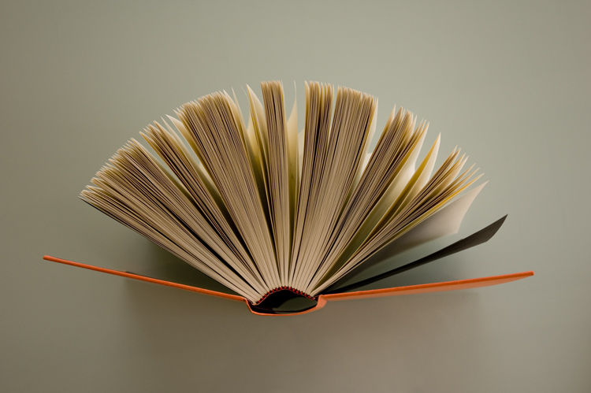

Embarking on adventurous culinary experiments, I find immense joy in exploring the realm of gastronomy. From concocting fusion dishes that merge diverse culinary traditions to mastering intricate cooking techniques, my kitchen becomes a playground of flavors and textures.

Immersing myself in the captivating world of literature, I find solace and inspiration within the pages of thought-provoking novels. With each literary journey, I traverse through different realms, perspectives, and eras, expanding my knowledge and nurturing my imagination.
With a camera in hand, I embark on a visual odyssey, capturing moments frozen in time with artistic precision. Photography is my medium of expression, allowing me to showcase the beauty and intricacies of the world.